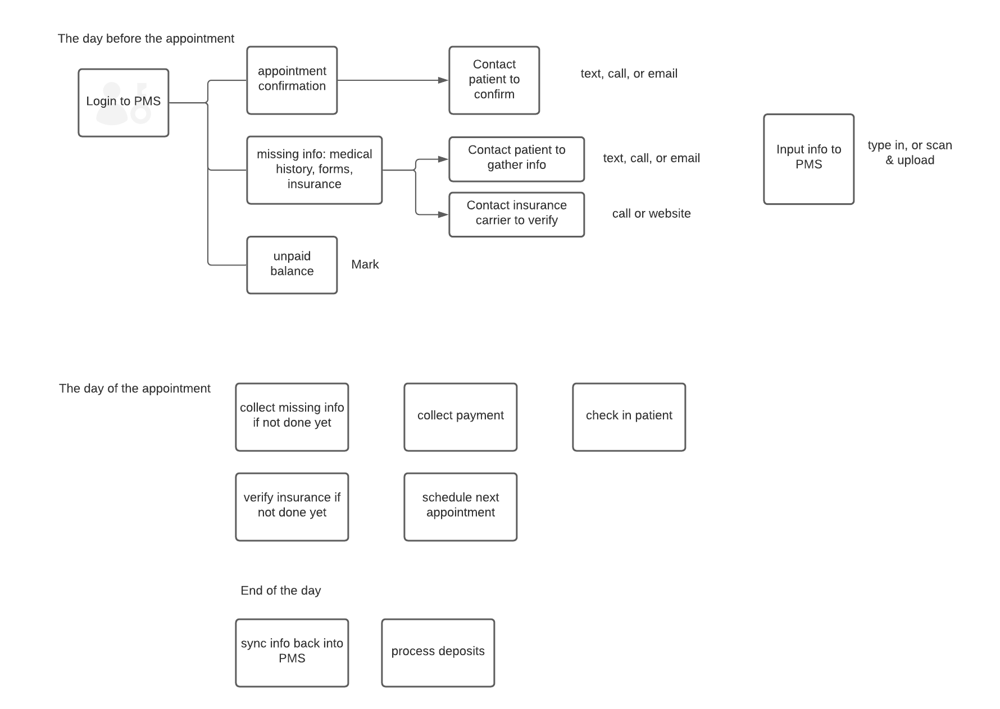
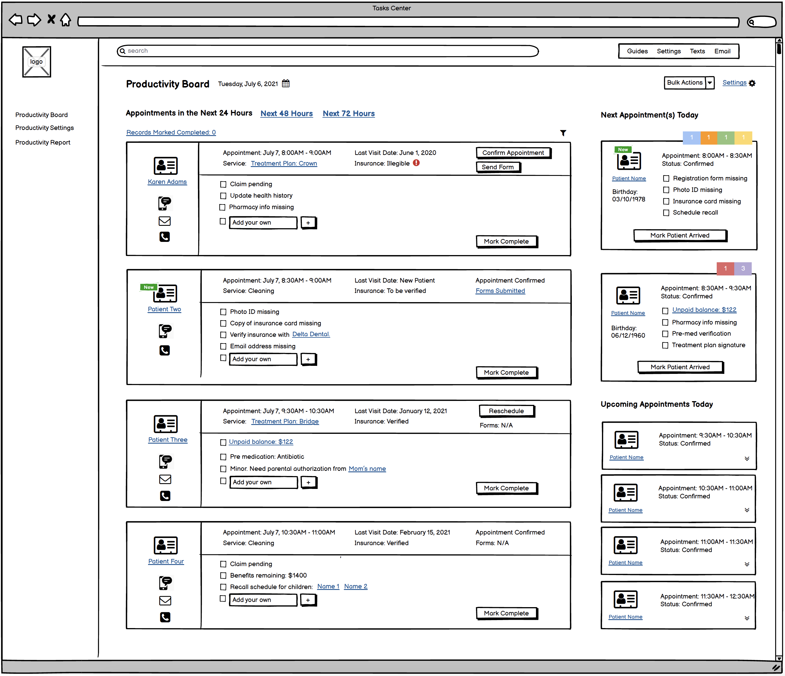
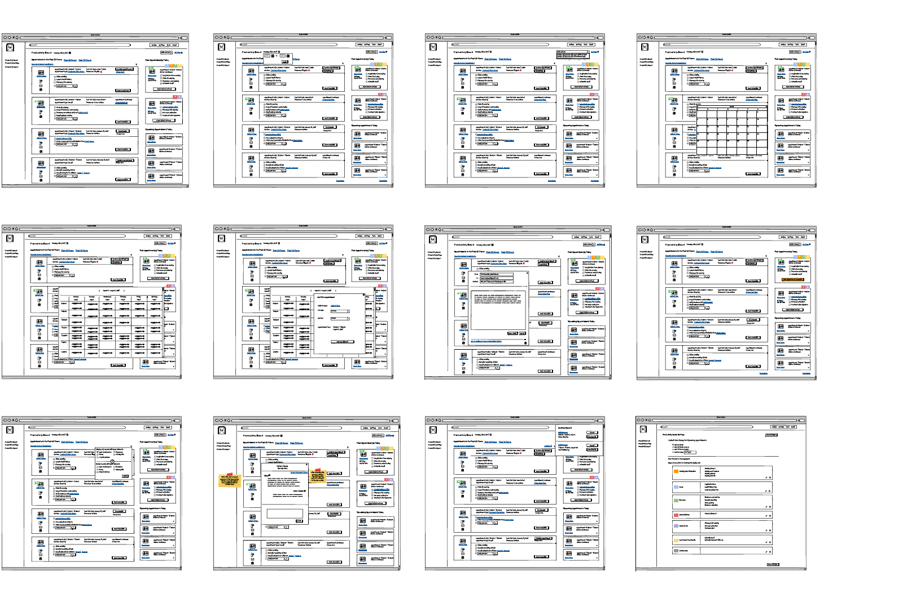
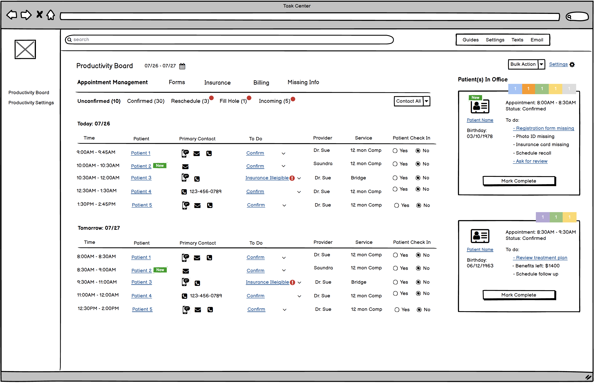
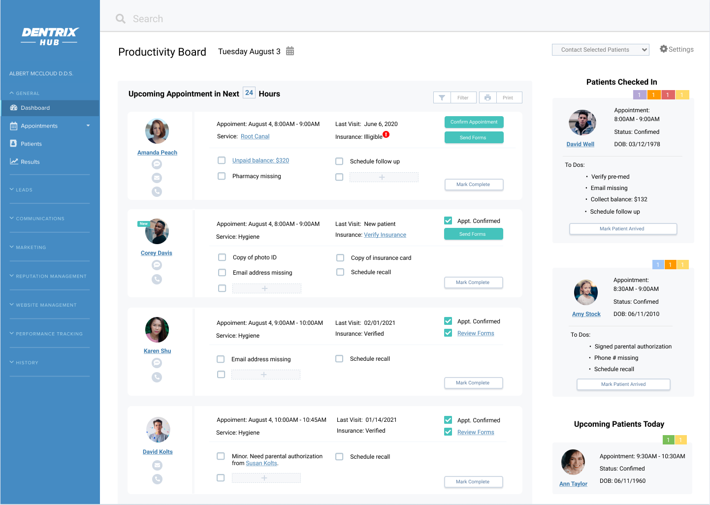
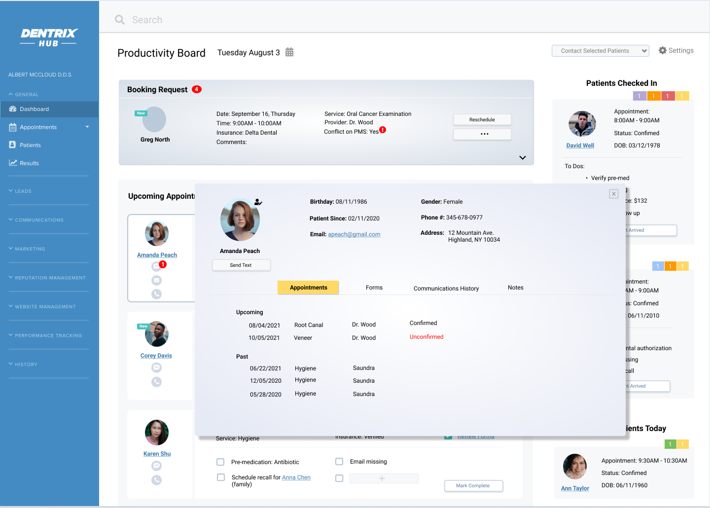
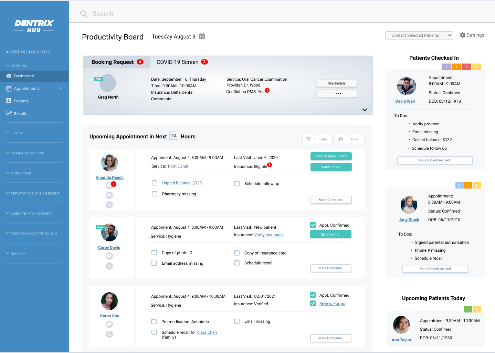

SaaS Product Tasks Management Tool
 Duration: Ongoing
Duration: Ongoing
 Tools: MS Team, Balsamiq, Figma
Tools: MS Team, Balsamiq, Figma
 My Roles: User Research, Information Architecture, Wireframing, Hi-Fi Prototype, Usability Testing
My Roles: User Research, Information Architecture, Wireframing, Hi-Fi Prototype, Usability Testing
The front desk staff at the dental practice plays an important role in a well-functioning office. Every day, they need to greet the patient, schedule and manage appointments, discuss treatment plans with the patient, collect unpaid balance, answer any questions that the patient has, and so on. Currently, there isn't any software that they can use to automate these tasks for them. They have to login to different software to collect information and then do a comparison manually in order to know what exactly needs to be done.
In order to provide a viable solution for the user, user research has to be done first to understand their existing workflow and the pain points in this flow. The team, 2 product managers, a user reseacher, and I started the project with a discussion on the format of the user research. We all agreed that since we have very little knowledge of the user’s workflow but have some idea of what kind of problem we try to solve, we should conduct the user interview with semi structured questions.
I worked with the user researcher to create a user interview script. Once we finalized the script, we set up the user interview with 6 users who are currently working as the front desk staff in a dental office. Each user interview was recorded so that we could come back to listen again and make detailed notes.
After 3 user interviews, we started to see a pattern and we know we are heading in the right direction. All 3 users follow the same routine taking care of the office related tasks. They all spend a big chunk of their time taking care of tasks related to the patients who are coming in the next day. They first login to the Practice Management System (PMS) to generate a report for the patient who is coming in the next day, and then they will print out this report. They will then go over the report and mark everything that they need to take care of. We finished the other 3 user interviews confirming this is a common pattern among all users.
Based on the insight we learned, I mapped out all the use cases so that I have a clear understanding of the entry point of all possible tasks and also the tools that the user might need to complete the task:

Since all users we interviewed mentioned that they spent the majority of their day preparing for tomorrow’s appointments. I think it makes sense to focus on appointments within the 24 hour time frame. However, they also mentioned that there will be tasks that cannot be completed 24 hours prior to the appointment (e.g., they might not be able to get hold of the patient,) this type of tasks need to be surfaced somewhere on this user interface too.
Also, the existing workflow for all users we interviewed is that they work on all tasks related to one patient and then they move on to the next one. I decided to create a design that’s in line with their existing workflow to make it easier for the user to adopt this new tool, as well as flatten their learning curve.


I presented my design to the team and got pretty positive response. However, when we invited more stakeholders for feedback, a couple of them want to see the information flow from a different perspective. Their argument is that based on their knowledge, confirming an appointment is such an important task and it could be a road blocker if this task is not completed. I created the second design to accommodate this flow.

At this point, there are divided opinions on the design within the team. Some team members prefer the first design, while the others like the second design. We decided we should put both designs in front of real users and let them tell us which design they think will work for them.
The result came back with no surprise to me. The user likes the first design since this one is completely in line with their existing workflow. The only difference is that with the tool, we eliminate all the manual labor and provide a dynamic and automated process.
However, some users raised an issue that we haven't taken into consideration: the current workflow covers all routine tasks, but there will be times when the staff needs to care for disruptive tasks such as an incoming booking request, a text message from the patient, or a form just submitted by the patient. They want to have this type of information surfaced when they get it. Based on the feedback, I revised the design and added a section on the top of the screen dedicated to the disruptive tasks. This section will be dynamic and will change based on the status of the task.


